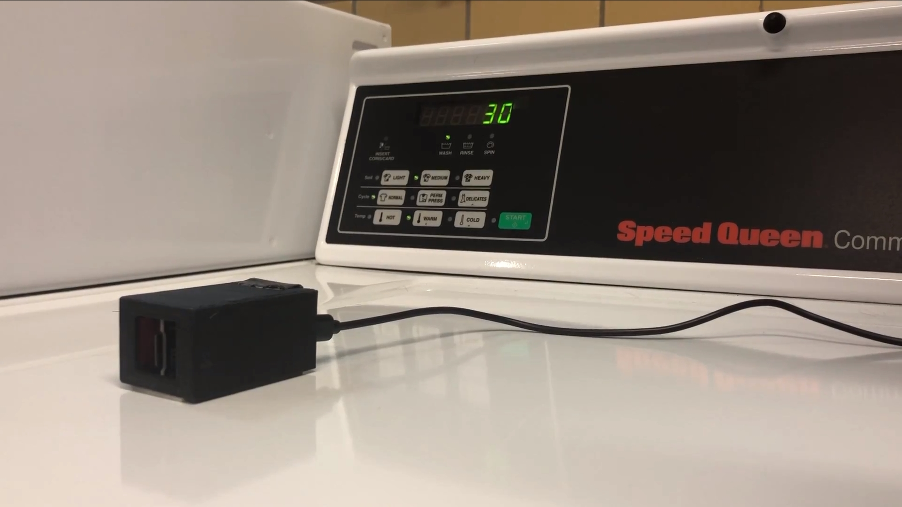

Project Rumble
Project Rumble's goal is to identify the status of a washing machine using an accelerometer and an ESP32 processor. Using the accelerometer data and a neural net, the Rumble device predicts whether or not the washer is running.

Project Rumble is run by Vectorform, a tech company that, in recent years, has had a focus on the internet of things. Vectorform serves as a client for the Computer Science capstone course at
Michigan State University. As the client, Vectorform has provided a problem that needs solving and the students are responsible for solving it. The specifications of the project are that
it must use raw accelerometer data gathered using an Arduino device and a machine learning model to predict whether a washer is on or off.
Contribution

Neural Net Data Processing
I serve as the data processing lead on a team with three other students. I have handled all of the data processing and machine learning that has been part of Project Rumble.
- Created a neural net from scratch to predict the status of a washer using machine learning
- Used gradient descent and back propagation to write a learning algorithm for the neural net
- Formatted learning data to train the neural net
- Developed strategy to generalize data across all device orientations, reducing the amount of training data needed for accurate results
- Working with industry partners to provide continuous feedback on progress and feasibility of project